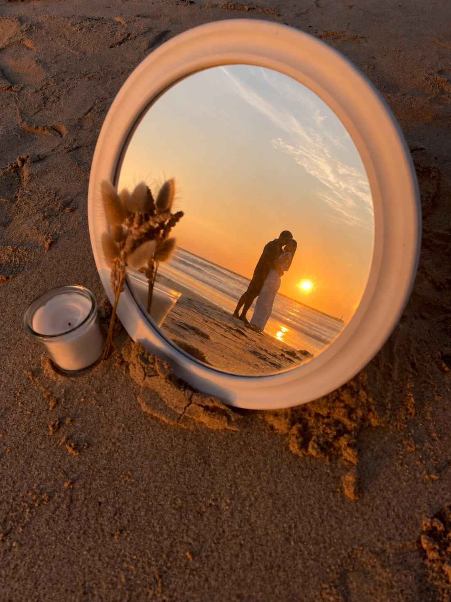
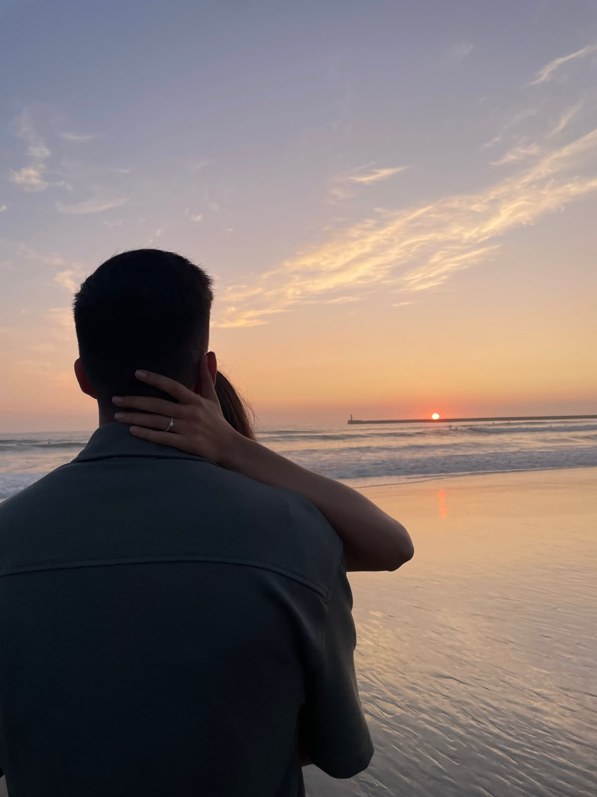
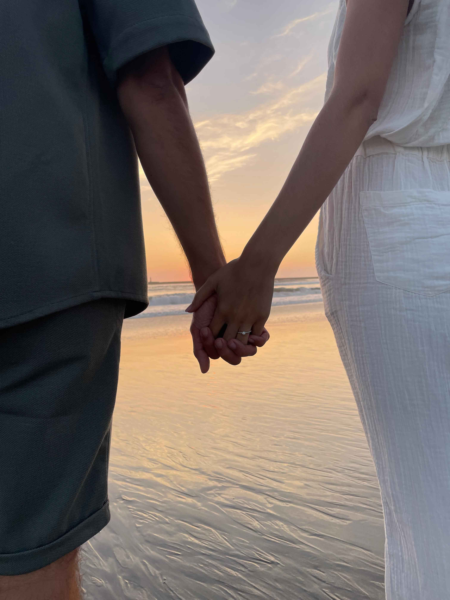
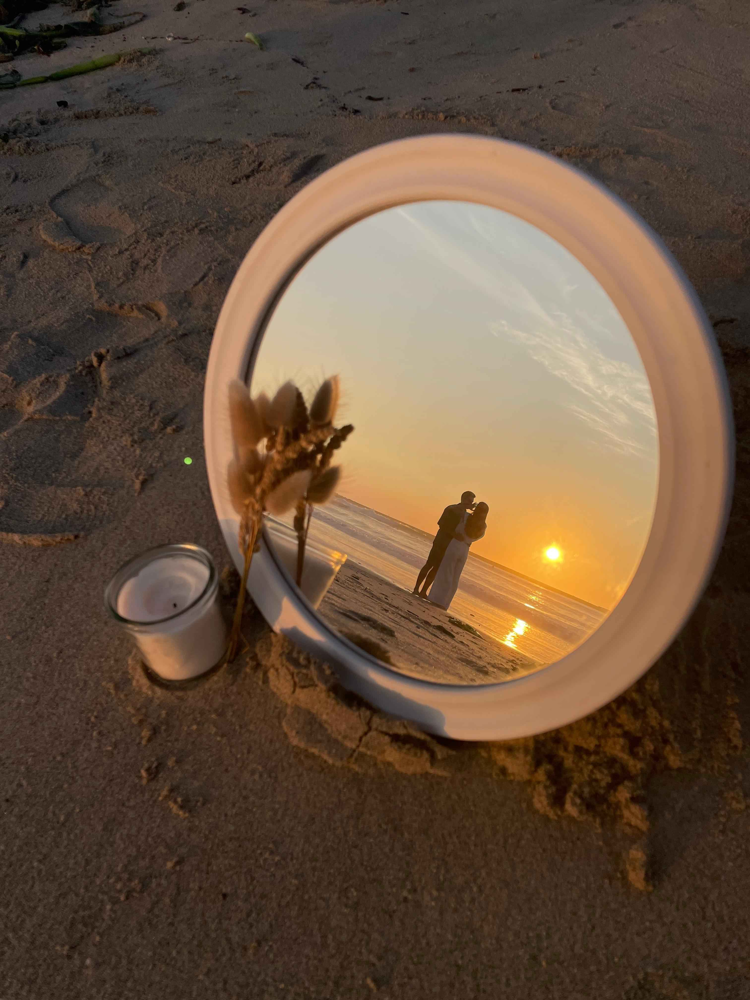

Os Nossos Momentos
Nem sempre os planos saem como imaginamos… Tínhamos uma viagem marcada para Nova Iorque, precisamente na altura em que celebrávamos 10 anos de namoro. O que deveria ser apenas uma viagem especial escondia um plano ainda maior: era lá que o pedido de casamento deveria acontecer. Mas uma gastroenterite apanhou-nos aos dois e Nova Iorque teve de ficar para outra altura. Ficámos por cá e acabámos por ir até à nossa praia, em Vila do Conde, um lugar onde tantas vezes passamos os nossos dias de verão. E foi ali, sem viagens nem grandes planos, que aconteceu um dos momentos mais importantes da nossa história. O plano era Nova Iorque. O destino escolheu Vila do Conde. E começou ali um novo capítulo da nossa história. 🤍




